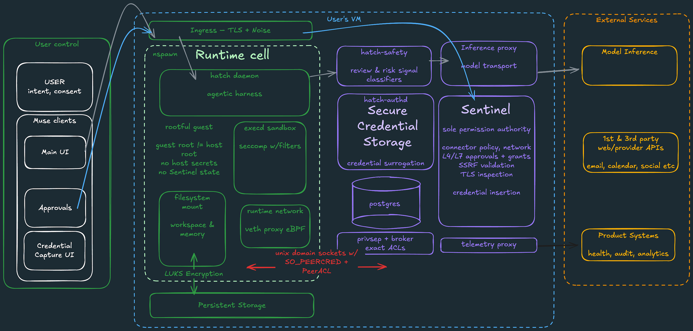

Substack｜Meta Muse：把一台持續運作的雲端電腦交給 AI Agent

一句話摘要
Meta Muse 的真正產品不是「另一個聊天介面」，而是把一台專屬、持續存在的雲端電腦交給 agent，讓它替使用者處理購物、退訂閱、寄信、比價與長時間瀏覽任務；這也讓 AI 產品第一次必須直接面對「每多一位使用者，就多一份基礎設施帳單」的商業現實。
來源與查核邊界
- 原文：Daniel Wu，〈Meta 送你一台電腦，替你買東西、退訂閱〉。
- 發布時間：2026-09-13（Substack 頁面與 JSON-LD 顯示）。
- 本文保留作者的產品觀察與推論，但不把文章中的 Reuters、The Verge、Gizmodo 轉述當成已獨立核實的官方事實。
- Meta Muse 的方案、每週 token 額度、可用地區、付款方式與安全懸賞金額都可能改變；正式導入前應重新檢查 Meta 官方產品頁、服務條款、隱私政策與安全公告。
- 作者把 Meta Muse 與 OpenClaw、雲端 VM、agentic commerce 串在一起；這是很有啟發性的產品分析，不等於 Meta 已公開承諾所有商業模式或未來功能。
Muse 在產品上做了什麼
文章描述的 Muse 包含四個關鍵層次：
- **自然語言入口**：使用者以聊天方式交代任務，不必自行操作每一個網站。
- **持續存在的執行環境**：每位使用者有一台隔離 VM，內含瀏覽器、儲存空間與處理資源；即使關閉 App，長時間任務仍可能繼續。
- **連接個人資料與服務**：可能連接 Gmail、行事曆、Facebook、Instagram、健身資料等服務，因此能提出更個人化的建議。
- **交易與授權閘門**：購物、取消訂閱或其他高影響動作需要使用者批准；信用卡由支付服務商代管，agent 不應直接取得完整卡號。
這種設計把 agent 從「回答問題的模型」推進成「代替使用者執行工作的軟體代理人」。評估重點也因此改變：不只看回答品質，還要看權限、狀態、記憶、瀏覽器操作、交易確認與失敗復原。
最值得學習的安全架構

文章將 Sentinel 描述成與 Muse 本體分離、位於系統層的權限裁決元件。可抽象成以下安全原則：
### 1. 讀過私有資料後，工具不能繼續自動通行
工具一旦讀取使用者資料，就不再被視為乾淨、無狀態的工具；它要重新連外或執行敏感動作時，必須重新經過審批。這是把「資料讀取」視為會污染執行狀態的安全事件。
### 2. Agent 不直接接觸真正的秘密
模型或工具拿到的是代用憑證，真正的 token、密碼或支付憑證在靠近網路邊界時才由受控元件換入。這能降低 prompt injection 直接竊取長期秘密的風險，但不代表所有外洩風險消失：權限過寬、錯誤目標、錯誤交易與側錄仍需處理。
### 3. 核准介面必須與對話通道分離
若攻擊者能透過網頁內容或外部訊息操控 agent，便不應讓同一段對話直接生成「已批准」結果。把核准視窗放在 App 的可信 UI 層，可降低 prompt injection 偽造使用者同意的機會。
### 4. 電子郵件是高風險資料源
信箱往往含有登入連結、密碼重設、一次性驗證碼與個人資料。連接器應在資料進入 agent 前過濾這些內容，而不是只依賴模型自己判斷「不要讀取驗證碼」。
### 5. 高額漏洞懸賞是現實主義訊號
文章提到 Meta 為 Muse 設置最高 30 萬美元的漏洞懸賞，並依攻擊是否需要使用者互動分級。無論金額與規則日後如何變動，這種做法傳達一個重要訊息：隔離 VM 與權限護欄是降低風險，不是證明 agent 絕對安全。
「幫你省錢」為何比「幫你寫信」更容易變現
Muse 的示範場景集中在檢查支出、找出閒置訂閱、比價、追蹤退款與購物優惠。這個產品定位有三個策略優勢：
- **價值可量化**：省下 47 美元，比省下 30 分鐘更容易讓使用者判斷訂閱是否划算。
- **直接連到交易**：agent 可以從搜尋、比較一路走到下單或取消，掌握過去廣告系統較難取得的「最後一哩」意圖。
- **容易形成抽成模式**：未來收入不一定只來自月費，也可能來自交易服務費、商家導流或進階自動化方案；這些都是作者的推測，不能當成 Meta 已確定的商業計畫。
對產品設計者而言，這提供一個可重用框架：先找出能被使用者立即驗證的結果，再決定 agent 是否值得長期授權。
真正的成本：不是 token，而是「每人一台電腦」
傳統聊天服務可以把請求排隊、批次化或在閒置時段調度；持續存在的 agent VM 則不同。每增加一位使用者，可能同步增加：
- VM、容器或瀏覽器工作區的資源。
- 儲存空間、快照、記憶與長任務狀態。
- 網路出口、代理、驗證與安全監控成本。
- 任務失敗後的重試、人工核准與客服成本。
因此「免費額度」不只是行銷問題，也是容量控制器。產品可用 token、執行時間、並行任務數、儲存量或高風險工具次數設上限，並清楚顯示使用者消耗了什麼。對 AI SaaS 而言，這比單純標示「免費／付費」更誠實。
對 Hermes 與 AI 工作流的啟示
### Agent 不等於模型
評估 Hermes、OpenClaw 或任何 agent 系統時，至少要分開檢視：
- 模型：推理、規劃、工具選擇與錯誤率。
- Harness：循環、上下文、記憶、Skills、排程與背景任務。
- 執行環境：檔案系統、瀏覽器、網路、沙盒、憑證與 process 權限。
- 通道：使用者如何收到通知、核准或拒絕高風險動作。
- 成本：每個工作階段的 token、CPU、儲存、網路與人工監督成本。
### 高風險動作必須有獨立核准
購買、付款、刪除資料、寄出敏感郵件、修改公開內容或取得新權限，都不應只靠對話中的一句「好」。應建立明確的核准卡片，顯示目標、金額、資料範圍、即將執行的工具與撤銷方式。
### 本機 agent 也不能忽略資料外傳
即使模型與 VM 在本機或私有環境，瀏覽器、MCP、外掛、網路搜尋與第三方 API 仍可能把資料送出。安全邊界必須以「完整工作流」為單位，而非只看模型部署位置。
導入檢核表
- [ ] 先列出 agent 可以讀取、修改、購買與傳送的資源。
- [ ] 將瀏覽器、信箱、支付、社群帳號與檔案系統分開授權。
- [ ] 對每一個連接器定義資料最小化與敏感欄位過濾規則。
- [ ] 讓秘密以短期、範圍受限的代用憑證存在，避免長期明文金鑰進入模型上下文。
- [ ] 把高風險核准放在與 agent 對話分離的可信介面。
- [ ] 測試 prompt injection、惡意網頁、釣魚郵件、錯誤收件者與重複下單。
- [ ] 為長時間任務設定逾時、預算、並行數、重試次數與人工接管條件。
- [ ] 記錄每次工具呼叫、資料讀取、權限變更與使用者核准。
- [ ] 以小額、非敏感資料進行沙盒測試，通過後才逐步擴大權限。
- [ ] 定期重查產品方案、地區限制、價格、隱私政策與模型能力。
2026-09-24 補充：市場先替「可委派」下注，但尚非營收證明
AI觀察日記 | AI未來週報的〈13 天、280 萬次安裝、Meta 單日暴漲 11%〉將 Muse 放到資本市場與消費級產品的脈絡。作者轉述的早期安裝數、排名、股價、目標價、方案價格，以及 Amazon／Shopify 對 agent 的反應，均未在本次歸檔中逐項以原始財報、商店資料或平台公告獨立核實；因此應把它們視為來源報導與分析，而不是本條目的已驗證事實。
不過，這篇補充提出一組比下載量更實用的追蹤框架：
- 留存：DAU／MAU 是否顯示使用者形成習慣，而不只是下載。
- 任務完成率：跨網站、長時間任務能否可靠完成並正確復原失敗。
- 付費轉換：免費使用者中有多少願意為額度或自動化付費。
- Agent 發起交易：是否真正產生可量測的交易，而非只停留在推薦。
- 平台接受度：網站是提供受控 API／交易介面，還是阻擋自動瀏覽與代理操作。
這五項指標把「AI agent 很熱門」拆成需求、信任、單位經濟與網路治理四個可驗證問題。對團隊而言，產品的護城河不只在模型；還包括使用者情境、持續記憶、工具與權限治理、核准 UX、可靠度，以及取得合法平台整合的能力。
來源：AI觀察日記 | AI未來週報，2026-09-24。
https://futureaitw.substack.com/p/13-280-meta-11-ai-agent
2026-09-24 補充：教學式功能地圖與採用前的四道關卡
商盟AI學院的〈Meta Muse 完整教學〉以使用情境整理這類個人 agent：通訊、排程、研究／比價、購物、協商、生活清單與主動提醒。它也把採用前最容易被忽略的問題濃縮成四道關卡：敏感帳號與支付授權、早期功能限制、能否形成長期習慣，以及區域／帳戶資格。
該頁明確自述為彙整 Meta 公告、數據與媒體／使用者公開實測的二手資料，而非作者第一手測試。因此，App Store 排名、下載量、方案、可用平台、地區資格、模型名稱與各項安全細節在此僅保留為來源整理，仍須以 Meta 與服務供應商的最新一手文件重查。
可直接套用到任何要接觸信箱、行事曆、瀏覽器或付款的 agent 導入流程：
- 任務分級：先讓 agent 處理研究、草稿與清單，再逐步開放會外送、下單、付款或修改資料的動作。
- 最小權限：每個連接器獨立授權，限制資料範圍、有效期限與可執行動作；不要以「能登入」等同於「能代辦一切」。
- 獨立核准：把寄送、付款、取消訂閱與對外承諾放在可辨識目標、金額、收件者與撤銷方式的可信確認介面。
- 可觀測與可退回：保留工作日誌、步驟預覽、逾時與預算限制，並讓使用者能停止、復原與人工接管。
來源：商盟AI學院，2026-09-19。
https://aitw.biz/zh/blog/meta-muse-personal-ai-agent
2026-09-25 補充：從「省麻煩」到金融代理的想像，仍須區分產品事實與市場敘事
讀者提供的整理，將 Muse 的價值主張延伸到一條更具衝擊力的路徑：把原本因為太繁瑣而被放棄的收益、退款、理賠與條件切換，交給 agent 持續追蹤、比較與執行。這個推論的核心很清楚：若 agent 能可靠地降低轉換摩擦，使用者就可能不再長期忍受低利率閒置現金、高費用產品、未申請理賠或不利續約條款。
可作為產品方向思考的情境包括：
- 閒置資金提醒與調度建議：依帳單、交割與預留現金需求，提醒使用者把多餘資金轉往合適工具。
- 續約與費用比較：在信用卡年費、保險、基金費率、資產管理與訂閱續約前，整理同類方案、限制條件與轉換成本。
- 理賠與退款追蹤：建立文件清單、期限提醒、補件草稿與進度紀錄，避免因程序摩擦放棄應得權益。
- 交易導流：若 agent 成為搜尋、比較到下單的入口，平台可能嘗試採用商家導流、服務費或交易分潤等模式。
但這些是產品與商業模式的合理推演，不等於 Meta 已公開承諾的功能或計價方式。本次查核可確認 Meta 官方將 Muse 定位為個人 AI agent，下載頁提及任務處理與 Messages、Calendar、Notes 連接；未在可讀官方頁面確認自動買賣或調度貨幣基金、金融商品自動更換、代辦保險理賠、向商家抽佣等功能／商業條款。
同樣地，讀者摘要提及 S&P 500 金融類股、摩根大通、摩根士丹利、富國銀行、嘉信理財與 Allstate 的單日跌幅，以及「因 Muse 上線而下跌」的因果關係；以多組英文精確檢索，未找到能支持該等數字與歸因的可讀一手公司公告或可信財經報導。因此本條目保留其作為市場敘事與待查線索，不將之列為已驗證事件。
真正的導入界線尤其重要：金融帳戶、轉帳、交易、保險理賠與支付均屬高風險操作。即使未來 agent 支援這些流程，也應維持帳戶最小權限、金額／頻率上限、清楚比較依據、利益揭露、付款前獨立核准，以及可撤銷的完整操作紀錄；不要因「最優惠」的推薦語句就讓 agent 自動完成不可逆交易。
官方產品頁：
https://ai.meta.com/muse/download/
讀者摘要的完整證據邊界與擷取紀錄：
source-archive/2026-09-25-line-meta-muse-financial-impact-claims.json
結論
Daniel Wu 的文章最有價值的地方，不是預測 Meta Muse 一定會成為下一個聚合平台，而是指出 agent 商業化的成本結構已經改變：當產品替每位使用者保留一台可執行任務的雲端電腦，AI 就不再只是「回答一次問題」的變動成本。Meta 能否成功，取決於一般人的日常是否有足夠多值得長時間委派的工作，以及使用者是否願意把個人資料、付款能力與行動權限交給它。
對實作團隊而言，最可複製的答案不是照抄 Muse，而是採用它揭示的工程原則：隔離執行環境、權限裁決元件、秘密不進模型、核准通道獨立、可觀測的成本上限，以及把「agent 出錯」當成設計前提。
原始與延伸來源
- Substack 原文：https://daniel578120.substack.com/p/meta
- 作者引用的 Stratechery 延伸閱讀：https://stratechery.com/2026/mythos-muse-and-the-opportunity-cost-of-compute/
- Meta 官方入口（產品與公告應以最新內容為準）：https://about.fb.com/